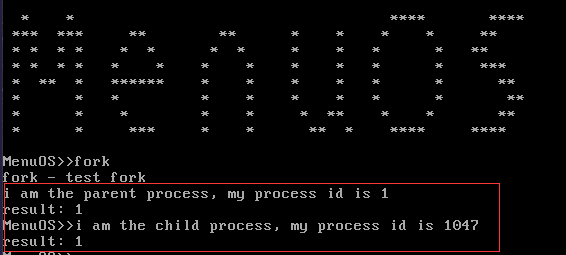
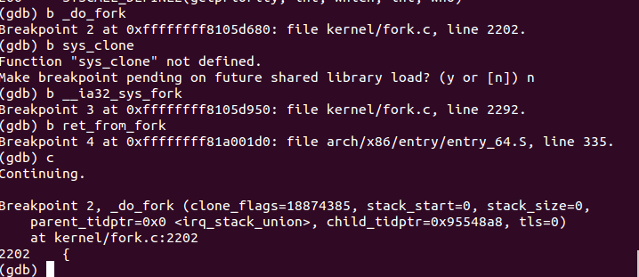
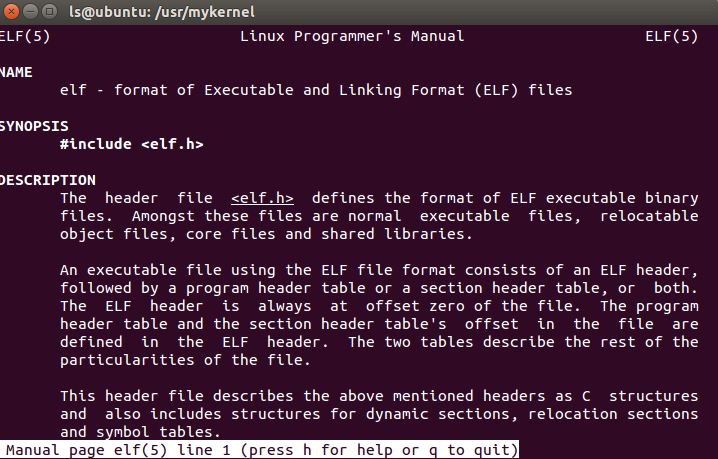
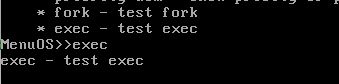
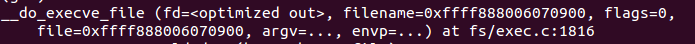
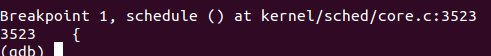

学号：196
原创作品转载请注明出处 + https://github.com/mengning/linuxkernel/
Linux 的进程描述符在 linux/include/linux/sched.h 文件中定义的名为 task_struct 的结构体（以 linux-5.0.1 内核为例，以下相同）。该结构体内容庞大繁杂，包含了一系列和进程运行相关的内容。
部分描述进程的底层信息
#ifdef CONFIG_THREAD_INFO_IN_TASK
struct thread_info thread_info;
#endif
指向内存部分的指针
void *stack; // 内核栈指针
struct mm_struct *mm, *active_mm; // 指向进程地址空间
unsigned int ptrace; // 系统调用相关
进程本身信息
/* -1 unrunnable, 0 runnable, >0 stopped: 进程状态 **/
volatile long state;
unsigned int flags; // 进程状态标志
/** 进程退出 */
int exit_state; int exit_code; int exit_signal;
/** 进程标识号 */
pid_t pid; pid_t tgid;
struct pid *thread_pid;
struct hlist_node pid_links[PIDTYPE_MAX];
/** 用于通知LSM是否被do_execve()函数所调用 */
unsigned in_execve:1;
/** 在执行do_fork()时，如果给定特别标志，则vfork_done会指向一个特殊地址*/
struct completion *vfork_done;
/* CLONE_CHILD_SETTID: */
int __user *set_child_tid;
/* CLONE_CHILD_CLEARTID: */
int __user *clear_child_tid;
进程调度
/* 进程调度优先级 **/
int prio, static_prio, normal_prio;
unsigned int rt_priority; // 实时进程的优先级
const struct sched_class *sched_class; // 进程调度类
struct sched_entity se; // 普通进程调度实体
struct sched_rt_entity rt; // 实时进程调度实体
unsigned int policy; // 调度策略
进程链表
struct list_head tasks, children, sibling;
struct task_struct *group_leader;
文件系统
/* Filesystem information: */
struct fs_struct *fs;
/* Open file information: */
struct files_struct *files;
中断
#ifdef CONFIG_TRACE_IRQFLAGS
unsigned int irq_events;
unsigned long hardirq_enable_ip;
unsigned long hardirq_disable_ip;
unsigned int hardirq_enable_event;
unsigned int hardirq_disable_event;
int hardirqs_enabled;
int hardirq_context;
unsigned long softirq_disable_ip;
unsigned long softirq_enable_ip;
unsigned int softirq_disable_event;
unsigned int softirq_enable_event;
int softirqs_enabled;
int softirq_context;
#endif
其他的还包括对进程通信，内存管理，死锁检测和设备管理等相关部分。可看到进程是操作系统基本组成部分，是资源分配、调度，设备管理的基本单位，在操作系统运行中发挥重要的作用。
该函数位于 linux/kernel/fork.c 中，是 fork 系统调用进行进程创建的关键函数。函数声明如下所示：
long _do_fork(unsigned long clone_flags,unsigned long stack_start,unsigned long stack_size,int __user *parent_tidptr,int __user *child_tidptr,unsigned long tls)
1.1 参数介绍：
unsigned long clone_flags： 进程克隆标志，
unsigned long stack_start：进程栈起始指针；
unsigned long stack_size：进程栈大小；
int __user *parent_tidptr, __user *child_tidptr：分别指向父子进程
1.2 过程：
首先根据克隆标志判断当前进程是否可被跟踪debug，当可以被跟踪的情况下，设置跟踪等级，决定当前进程可以上报给跟踪进程的信号；
if (!(clone_flags & CLONE_UNTRACED)) {
if (clone_flags & CLONE_VFORK)
trace = PTRACE_EVENT_VFORK;
else if ((clone_flags & CSIGNAL) != SIGCHLD)
trace = PTRACE_EVENT_CLONE;
else
trace = PTRACE_EVENT_FORK;
if (likely(!ptrace_event_enabled(current, trace)))
trace = 0;
}
调用copy_process()函数（linux/kernel/fork.c）复制进程描述符及为子进程复制父进程内容。如果所有必须的资源都是可用的，则该函数返回刚创建的task_struct描述符的地址；具体内容有 检查各种标志位、调用dup_task_struct复制一份task_struct结构体，作为子进程的进程描述符、检查进程的数量限制、初始化定时器、信号和自旋锁、初始化与调度有关的数据结构，调用了sched_fork，这里将子进程的state设置为TASK_RUNNING、复制所有的进程信息，包括fs、信号处理函数、信号、内存空间（包括写时复制）等、调用copy_thread，这又是关键的一步，这里设置了子进程的堆栈信息、为子进程分配一个pid、设置子进程与其他进程的关系，以及pid、tgid等；
p = copy_process(clone_flags, stack_start, stack_size,
child_tidptr, NULL, trace, tls, NUMA_NO_NODE);
由于该函数返回 pid, 利用以下代码获得新进程的 pid ；
pid = get_task_pid(p, PIDTYPE_PID);
nr = pid_vnr(pid);
根据克隆标志 CLONE_PARENT_SETTID，表示复制进程和创建该复制进程的有同一个父进程；
if (clone_flags & CLONE_PARENT_SETTID)
put_user(nr, parent_tidptr);
根据克隆标志 CLONE_VFORK ，代表在复制进程运行结束，释放空间后，会唤醒父进程；因此把父进程插入等待队列，并挂起父进程直到子进程释放自己的内存地址空间 ；
if (clone_flags & CLONE_VFORK) {
p->vfork_done = &vfork;
init_completion(&vfork);
get_task_struct(p);
}
唤醒复制进程；
wake_up_new_task(p);
如果有跟踪者，则告诉跟踪者复制进程准备开始运行，并且将相关信息告诉跟踪者；
if (unlikely(trace))
ptrace_event_pid(trace, pid);
if (clone_flags & CLONE_VFORK) {
if (!wait_for_vfork_done(p, &vfork))
ptrace_event_pid(PTRACE_EVENT_VFORK_DONE, pid);
}
最后将复制进程加入进程链表，并返回 pid 号；
put_pid(pid);
return nr;
利用 menu os 在 test.c 文件中添加使用 fork 系统调用的函数；
int testFork(int argc, char *argv[]){
pid_t fpid;
int count=0;
fpid=fork();
if (fpid < 0)
printf("error in fork!");
else if (fpid == 0) {
printf("i am the child process, my process id is %d\n",getpid());
count++;
}
else {
printf("i am the parent process, my process id is %d\n",getpid());
count++;
}
printf("result: %d\n",count);
return 0;
}
在 menu 目录下使用 make rootfs 生成文件系统， 然后使用qemu、重新挂载内核，文件系统；
sudo ../bin/qemu-system-x86_64 -kernel linux-5.0.1/arch/x86_64/boot/bzImage -initrd rootfs.img -s -S -append nokaslr

新建一个 shell 窗口，用 gdb 调试该 fork 调用；用以下命令在可能运行的函数处添加断点，跟踪fork执行过程；
b __ia32_sys_fork
b _do_fork
b sys_clone
b ret_from_fork
b copy_process

首先在 linux-5.0.1/arch/x86/entry/entry_64.S 中的 ENTRY(interrupt_entry) 处发生中断调用，将 ss , sp , eflags, cs , ip , arigin_ax, return_address 等寄存器的值保存在栈中，从用户态进入到内核态，进行系统调用，之后回到用户态，寄存器出栈，返回值；
进入 linux-5.0.1/arch/x86/entry/entry_compat_64.S 中的 ENTRY(entry_SYSCALL_compat) ，将一些寄存器值入栈，然后调用系统调用处理函数，执行完后，寄存器出栈返回；
进入 linux-5.0.1/arch/x86/entry/common.c 中do_fast_syscall_32 处理函数，执行一些准备工作后，进入do_syscall_32_irqs_on(regs) ，根据系统调用号，查找到 fork 调用，执行对应的调用函数；
在 linux-5.0.1/kernel/fork.c 中执行fork，最终执行 do_fork;
do_fork 中调用 copy_process 对子进程进行分配内存，并执行；
在 copy_process 中：
// 复制父进程进程描述符内容，并返回进程描述符
struct task_struct *p;
p = dup_task_struct(current, node);
// 对子进程栈进行初始化
retval = copy_thread_tls(clone_flags, stack_start, stack_size, p, tls);
在 linux-5.0.1/arch/x86/kernel/process_64.c 中 copy_thread_tls ：
// 该句将返回地址置为 ret_from_fork , 因此子进程是从ret_from_fork 开始执行
frame->ret_addr = (unsigned long) ret_from_fork;
// 初始化相关寄存器
frame->bx = 0;
*childregs = *current_pt_regs();
childregs->ax = 0; // 导致 fork 函数返回 0
linux-5.0.1/arch/x86/kernel/entry_64.S 中的 ret_from_fork
ENTRY(ret_from_fork)
UNWIND_HINT_EMPTY
movq %rax, %rdi
call schedule_tail /* rdi: 'prev' task parameter */
testq %rbx, %rbx /* from kernel_thread? */
jnz 1f /* kernel threads are uncommon */
2:
UNWIND_HINT_REGS
movq %rsp, %rdi
call syscall_return_slowpath /* returns with IRQs disabled */
TRACE_IRQS_ON /* user mode is traced as IRQS on */
jmp swapgs_restore_regs_and_return_to_usermode
1:
/* kernel thread */
UNWIND_HINT_EMPTY
movq %r12, %rdi
CALL_NOSPEC %rbx
movq $0, RAX(%rsp)
jmp 2b
END(ret_from_fork)
在计算机科学中，是一种用于二进制文件、可执行文件、目标代码、共享库和核心转储格式文件;
ELF有四种不同的类型: 可重定位文件、可执行文件、共享对象文件、核心转储文件。
通过 man elf 命令可查看 elf 文件详细内容。

1.2 动态链接
动态链接，在可执行文件装载时或运行时，由操作系统的装载程序加载库。
1.3 静态链接
静态链接是由链接器在链接时将库的内容加入到可执行程序中的做法。
1.4 编译链接过程
源文件 -> 预处理 -> 编译 -> 汇编 -> 链接 -> 可执行文件
execve 函数如下定义：
#include <unistd.h>
int execve(const char *filename, char *const argv[],
char *const envp[]);
filename：可执行文件名
argv: 执行参数
envp: 参数序列，一般来说他是一种键值对的形式 key=value. 作为我们是新程序的环境
编写调用 execve 的程序：
int testExecve(int argc, char *argv[]){
execve("./hello",NULL,NULL);
execve("time",NULL,NULL);
}
将其添加到 menu 中的 test.c 文件，并重新编译执行，得到结果，并且用 gdb 跟踪得到：
// 在 execve 等执行函数处打断点
b sys_execve
b __do_execve_file
b do_execveat_common


execve 的调用处理最终都归结到 linux-5.0.1/fs/exec.c 文件中的 __do_execve_file 函数，声明如下：
static int __do_execve_file(int fd, struct filename *filename, struct user_arg_ptr argv, struct user_arg_ptr envp, int flags, struct file *file)
// fd : 文件号
// filename: 文件名称
// argv：执行参数
// envp: 新程序执行环境参数
// file：可执行文件具体内容
函数功能及部分代码如下：
// 判断文件存在性
if (IS_ERR(filename))
return PTR_ERR(filename);
// 复制一份文件表；
retval = prepare_bprm_creds(bprm);
// 在堆上为文件分配相应空间；
bprm = kzalloc(sizeof(*bprm), GFP_KERNEL);
// 查找并打开二进制文件
if (!file)
file = do_open_execat(fd, filename, flags);
// 等待 CPU 调度来执行该二进制文件
sched_exec();
// 当CPU准备好之后，为该文件执行过程
// 初始化二进制文件描述结构体 linux_binprm
bprm->file = file;
if (!filename) {
bprm->filename = "none";
} else if (fd == AT_FDCWD || filename->name[0] == '/0'){ bprm->filename = filename->name;
} else {
if (filename->name[0] == '\0')
pathbuf = kasprintf(GFP_KERNEL, "/dev/fd/%d", fd);
else
pathbuf = kasprintf(GFP_KERNEL, "/dev/fd/%d/%s", fd, filename->name);
if (!pathbuf) {
retval = -ENOMEM;
goto out_unmark;
}
if (close_on_exec(fd, rcu_dereference_raw(current->files->fdt)))
bprm->interp_flags |= BINPRM_FLAGS_PATH_INACCESSIBLE;
bprm->filename = pathbuf;
}
bprm->interp = bprm->filename;
// 创建进程的内存地址空间
retval = bprm_mm_init(bprm);
// 填充 linux_binrpm 中的参数
retval = prepare_arg_pages(bprm, argv, envp);
// 检查该二进制文件的可执行权限
retval = prepare_binprm(bprm);
// 从内核空间获取二进制文件的路径名称
retval = copy_strings_kernel(1, &bprm->filename, bprm);
// 调用copy_string()从用户空间拷贝环境变量及命令
retval = copy_strings(bprm->envc, envp, bprm);
// 调用copy_string()从用户空间拷贝命令行参数
retval = copy_strings(bprm->argc, argv, bprm);
// 以上已经打开了二进制可执行文件
// 最终执行该二进制文件
retval = exec_binprm(bprm);
// 后半部分为执行成功的收尾工作
...

通过打断点，跟踪到 schedule() 出现在 linux-5.0.1/kernel/core.c 中，该函数中，阻止进程被抢占，然后调用 _schedule() 函数执行进程调度；
在 linux-5.0.1/kernel/core.c 中的 _schedule(bool preempt) 中根据处理器获得进程的就绪队列，加锁，屏蔽中断信号，然后获得当前进程描述符 prev 和接下来运行的进程描述符 next，然后交换跟踪者所跟踪的进程为 next , 并且交换进程上下文；
trace_sched_switch(preempt, prev, next);
rq = context_switch(rq, prev, next, &rf);
接下来跟踪 context_switch , 该函数主要交换两个进程的线性区 ；
struct mm_struct *mm, *oldmm;
mm = next->mm;
oldmm = prev->active_mm;
...
switch_mm_irqs_off(oldmm, mm, next);
/* Here we just switch the register state and the stack. */
switch_to(prev, next, prev);
之后是 arch/x86/include/asm/switch_to.h 中的 switch_to, 交换寄存器和进程栈；
// 获得下一个进程的 sp
READ_ONCE(*(unsigned char *)next->thread.sp);
在 arch/x86/entry/entry_64.S 中用汇编代码编写，来交换两个进程的栈
/* %rdi: 当前进程栈，%rsi: next task ：下一个进程栈 */
ENTRY(__switch_to_asm)
UNWIND_HINT_FUNC
/* 将当前寄存器值压栈 */
pushq %rbp
pushq %rbx
pushq %r12
pushq %r13
pushq %r14
pushq %r15
/* 交换进程栈指针 */
movq %rsp, TASK_threadsp(%rdi) // 将当前进程 sp 值放到本进程栈中
movq TASK_threadsp(%rsi), %rsp // 让 sp 指向下一个进程栈地址
...
/* 从下一个进程栈中取出上次因为调度而保存的寄存器值 */
popq %r15
popq %r14
popq %r13
popq %r12
popq %rbx
popq %rbp
jmp __switch_to
END(__switch_to_asm)
接着 arch/x86/kernel/process_64.h 中的 __switch_to 中交换段寄存器的内容；
savesegment(es, prev->es);
savesegment(ds, prev->ds);
最后调用其他函数完结整个进程调度过程；
[1] Linux-进程描述符 task_struct 详解: https://www.cnblogs.com/JohnABC/p/9084750.html
[2] 进程的创建 , do_fork()函数详解: https://blog.csdn.net/yunsongice/article/details/5508242
[3] Linux下进程的创建过程分析: https://blog.csdn.net/gatieme/article/details/51569932
[4] Linux进程启动过程分析do_execve: https://blog.csdn.net/gatieme/article/details/51594439